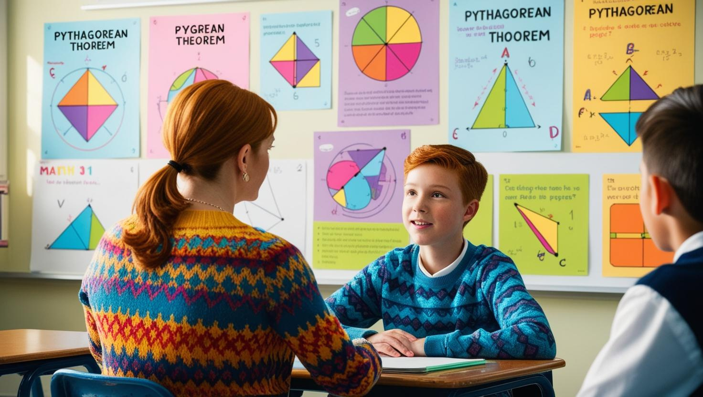

| ISH - Intensive Study Help non è un consueto servizio di ripetizioni, bensì un servizio di tutoring professionale e specializzato rivolto a bambini e ragazzi con DSA e ADHD. La mia missione è infatti offrire un supporto didattico che affronti le difficoltà dei ragazzi in modo olistico, lavorando sulla radice del problema. Il mio approccio è costruito su valori fondamentali come cooperazione, responsabilità, impegno, determinazione e il coraggio di mettersi in gioco. Promuovo l'autonomia, il pensiero critico e la fiducia in sé stessi, accompagnando i ragazzi in un percorso di crescita personale e scolastica. Credo nel coinvolgimento attivo dei genitori e della scuola, instaurando una rete di supporto che favorisca il miglioramento continuo. Con ISH, i ragazzi non solo acquisiscono competenze, ma sviluppano una visione positiva e fiduciosa del loro futuro. |  |
| I princìpi di ISH | |
|---|---|
|
Cooperazione tra le parti |
Organizzazione del lavoro |
|

Metodo di studio personalizzato |
Supervisione e accertamento dei progressi |
|
Obiettivo: autonomia e responsabilità |
Miglioramento e progresso |
Chi è il Tutor dell’Apprendimento?
Quali sono le principali funzioni del Tutor?
Come funziona il tutoring?
Qual è il ruolo del Tutor?
Quali sono gli obiettivi del Tutor?
Chi si rivolge al Tutor specializzato?
Il bisogno di chi si rivolge ad un Tutor si origina dalla consapevolezza di difficoltà più generalizzate:A chi è rivolto il tutoring?
Come si riconosce un Tutor?
Quali attività competono al Tutor?
ISH - Intensive Study Help di Monica Quagliotto Via Turello Milone 12 - 14019 Villanova d'Asti (AT) - Chiamate & WhatsApp: (+39) 3405005081 Email: ish.monicaquagliotto@gmail.com Pec: quagliotto.monica@pec.it P.IVA 01735240051